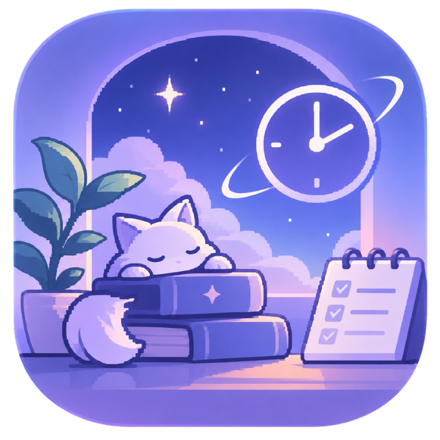

✦ Focus · Study · Be productive
StillSpace
A quiet workspace for focused studying.
Block distracting apps and websites, stay on track with focus sessions, and achieve your goals.
🛡 Free. Safe. Lightweight.
Also download the free browser extension so website blocking works.

🔒Block DistractionsKeep apps and websites out of your way.
⏱Focus SessionsSet a timer and lock in.
🖥Floating TimerAlways visible, everywhere you work.
📊Track ProgressBuild streaks and reach your goals.
🐾Collect CreaturesA companion on your focus journey.
★Minimal & CalmA clean, peaceful experience.
Good afternoon! Keep going, you're doing great. 🔥 12 day streak
25:00
Start Focus
✦ Why StillSpace?
StillSpace helps you stay focused in a world full of distractions. With powerful blocking, a minimal interface, and a loyal companion, you can finally get more done.
- Block distracting apps and websites
- Custom focus sessions and timers
- Track your progress and build streaks
- Collect and care for unique creatures
Your focus.
Our space.
Our space.